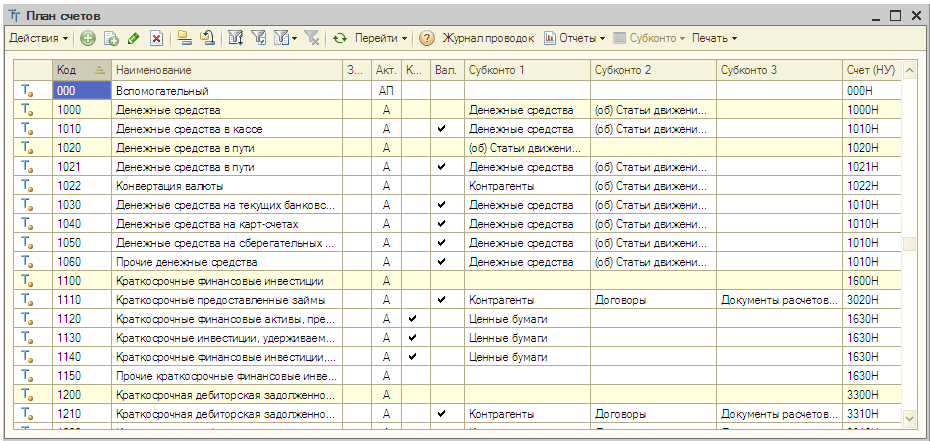
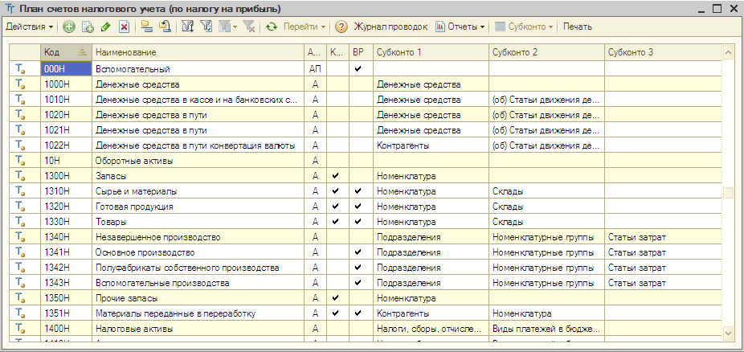

«1С:Бухгалтерия 8 для Казахстана» содержит план счетов бухгалтерского учета и специальный план счетов налогового учета (по налогу на прибыль). Планы счетов в программе заполнены предопределенными счетами и субсчетами, регламентированными законодательством. Пользователь не может удалять предопределенные счета, но может добавлять новые счета и субсчета в планы счетов.
План счетов бухгалтерского учета (меню «Предприятие» - «Планы счетов» - «Типовой план счетов бухгалтерского учета»)
В конфигурации реализован план счетов, утвержденный приказом Министра финансов Республики Казахстан №185 от 23 мая 2007 г.
План счетов бухгалтерского учета можно открыть из меню Планы счетов — План счетов бухгалтерского учета.

В командной панели формы плана счетов бухгалтерского учета находятся кнопки, с помощью которых Вы можете получить дополнительную информацию по выбранному счету:
План счетов налогового учета (меню «Предприятие» - «Планы счетов» - «План счетов налогового учета (по налогу на прибыль)»)
План счетов налогового учета (по налогу на прибыль) не предусмотрен нормативными документами и является частью методики ведения учета в «1С:Бухгалтерии 8 для Казахстана». Он служит для того, чтобы хозяйственные операции отображались в налоговом учете в соответствии с Налоговым кодексом Республики Казахстан.
План счетов налогового учета можно открыть из меню Планы счетов — План счетов налогового учета (по налогу на прибыль).

В командной панели формы плана счетов налогового учета находятся кнопки, с помощью которых Вы можете получить дополнительную информацию по выбранному счету:
Только что Вы познакомились с планами счетов бухгалтерского и налогового учета.
Из следующего раздела Вы узнаете, как заполняются сведения о деловых партнерах организации.